Tes mots : « on voit toujours pas sur le graph où est le moment présent » ; puis, au tour 18 : « pas très élégant le repère ». Quatre repères, sur ton écran, à 390 px.
Réponds par une lettre, par exemple « B ». Chaque variante : 3 sem. en jours, 40 sem. en mois, puis aujourd'hui hors de la vue.
Ton écran
Aujourd'hui : lundi 23 nov., S48. Toutes les maquettes sont dessinées sur l'axe unique décidé ce matin : courbe, bande et rangées alignées, le cadre les traverse, gris léger hors du cadre.
·Ta capture, 9:47
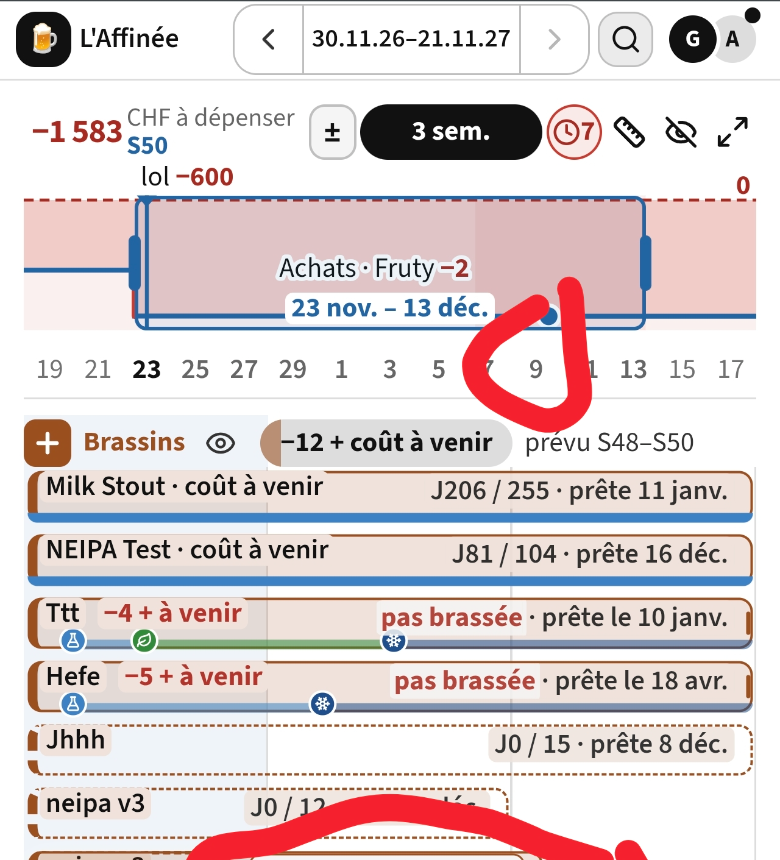
Avant le trait : rien sur la courbe, seulement « 23 » en gras et la semaine en bleu dans les rangées.
·Tour 18, en ligne
3 sem., en jours
40 sem., en mois
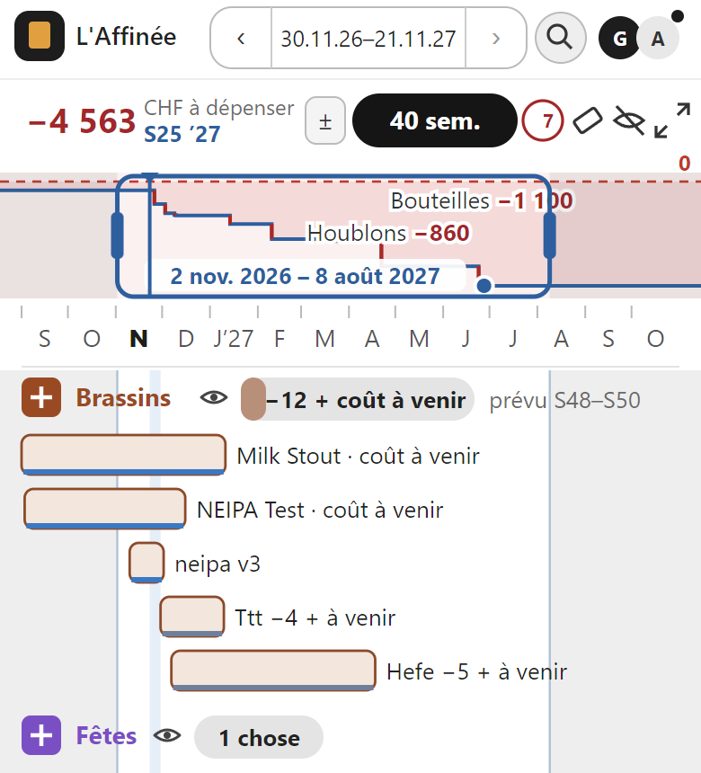
Aujourd'hui hors de la vue
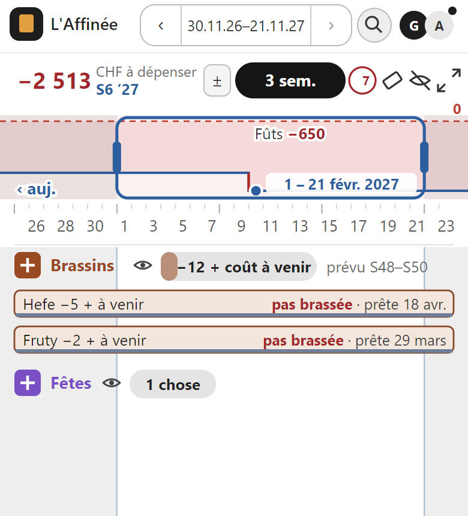
Le trait de 2 px et son triangle, sur la courbe seulement ; il s'arrête à la bande. Redessiné d'après le code du tour 18.
Les quatre repères
AFil bleu, « auj. » sur la bande
3 sem., en jours
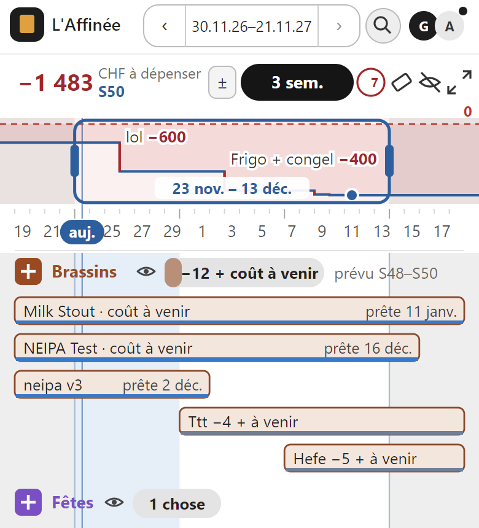
40 sem., en mois
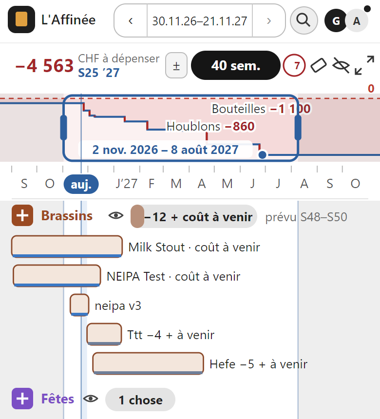
Aujourd'hui hors de la vue
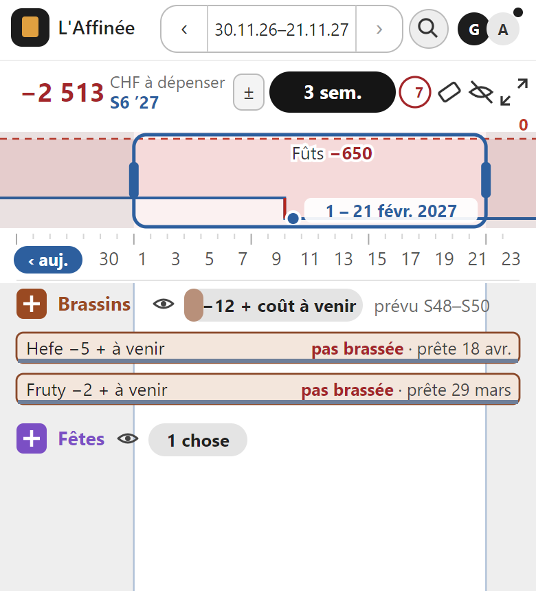
Ce qui change : le trait devient un fil de 1 px, pâle, de la courbe jusqu'aux rangées ; une pastille « auj. » sur la bande. Hors de la vue : la pastille « ‹ auj. » au bord.
BLa colonne bleue monte recommandé
3 sem., en jours
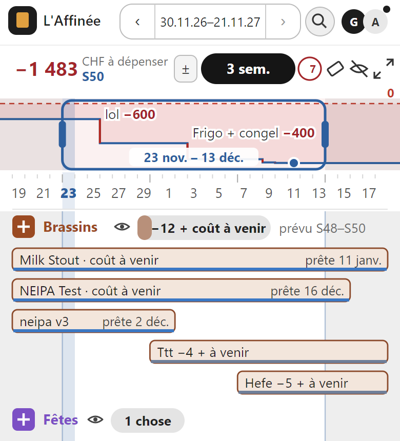
40 sem., en mois
Aujourd'hui hors de la vue
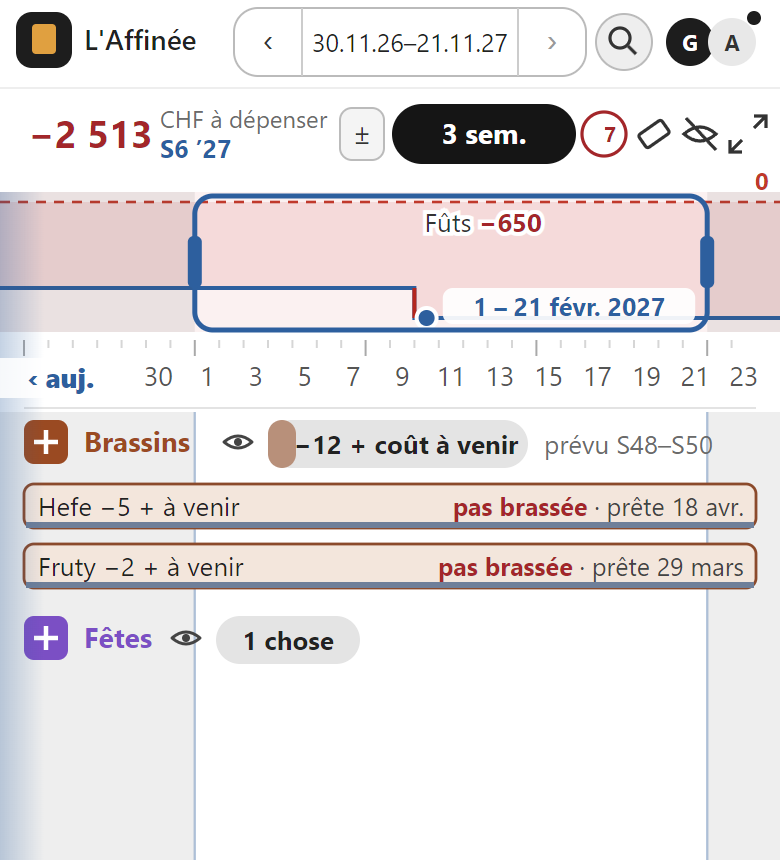
Ce qui change : plus de trait. Ton bleu des rangées traverse aussi la bande et la courbe : le jour en jours, la semaine en semaines et en mois. Hors de la vue : un dégradé bleu au bord, « ‹ auj. ».
CPoint sur la courbe
3 sem., en jours
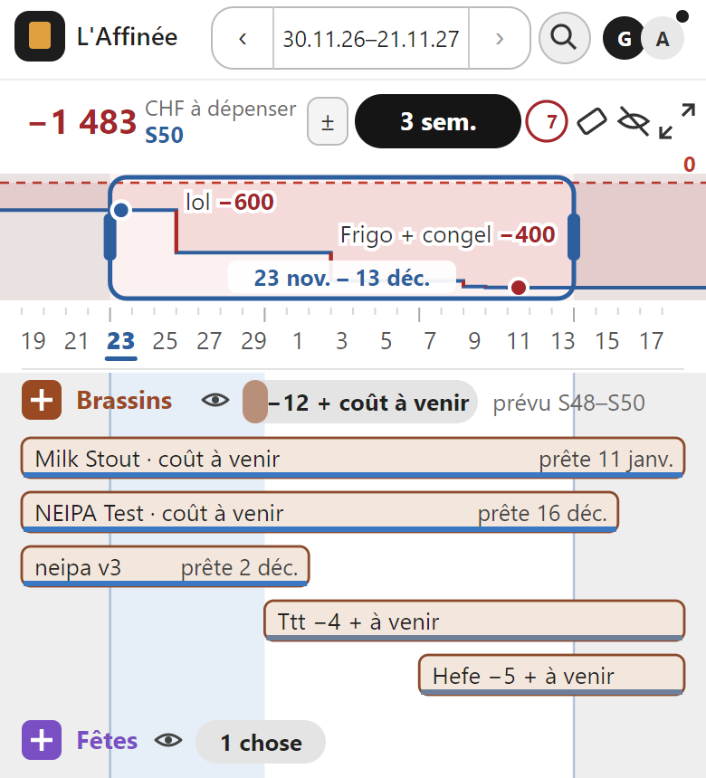
40 sem., en mois
Aujourd'hui hors de la vue
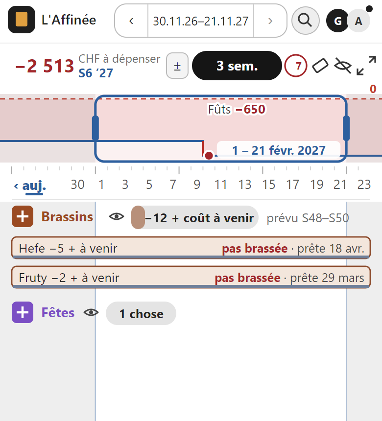
Ce qui change : un point bleu sur la courbe, à aujourd'hui ; « 23 » ou « N » en bleu, souligné. Le point du creux passe en rouge, pour ne pas confondre les deux points.
DEncoche ▾
3 sem., en jours
40 sem., en mois
Aujourd'hui hors de la vue
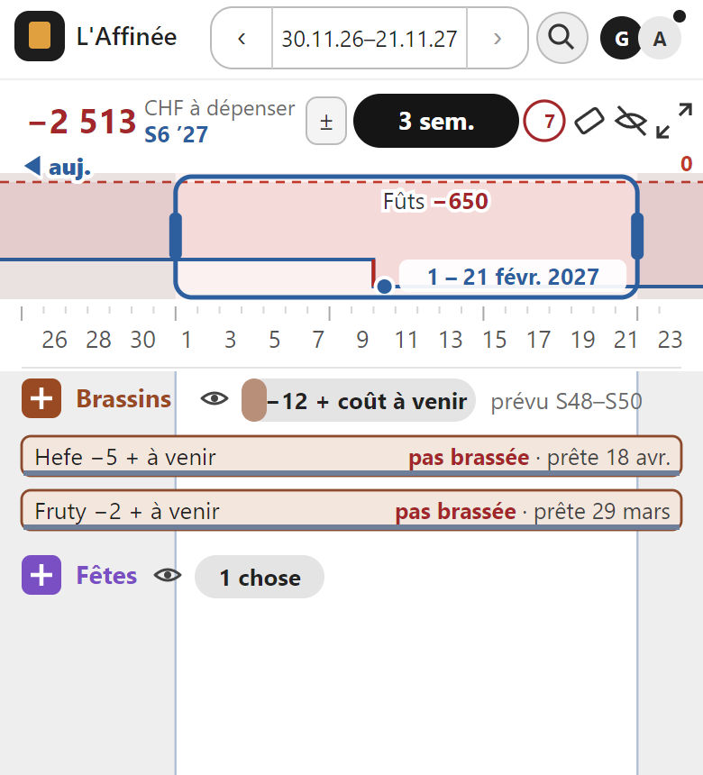
Ce qui change : une encoche ▾ posée sur le haut de la courbe, un cran bleu et la graduation en bleu sur la bande. Rien ne traverse la courbe. Hors de la vue : ◂ « auj. » en haut à gauche.
Noms repris de tes captures ; montants et dates d'exemple. Le chiffre « à dépenser » suit le cadre (ton choix « Creux du cadre »). Sources : SPEC 23.11, D441.